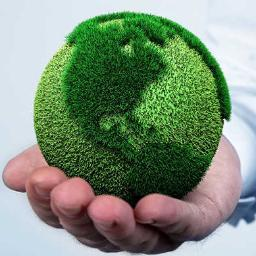

Ecologia
En este tema encontraras un resumen de lo que es la historia de la ecologia
La ecología es la rama de la biología que estudia las interrelaciones de los diferentes seres vivos entre sí y con su entorno: «la biología de los ecosistemas» (Margalef, 1998, p. 2). Estudia cómo estas interacciones entre los organismos y su ambiente afecta a propiedades como ...ver mas
 Fisica
Fisica